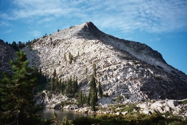

Last camping trip before leaving for Sweden - a four day, 20-mile round
trip to Old Man Mountain, in the Grouse Ridge area of Nevada County,
California

View of Old Man Mountain from Phoenix Lake... Nathan at the summit

View of Old Man Mountain from
Grouse Ridge lookout
Other Hikes